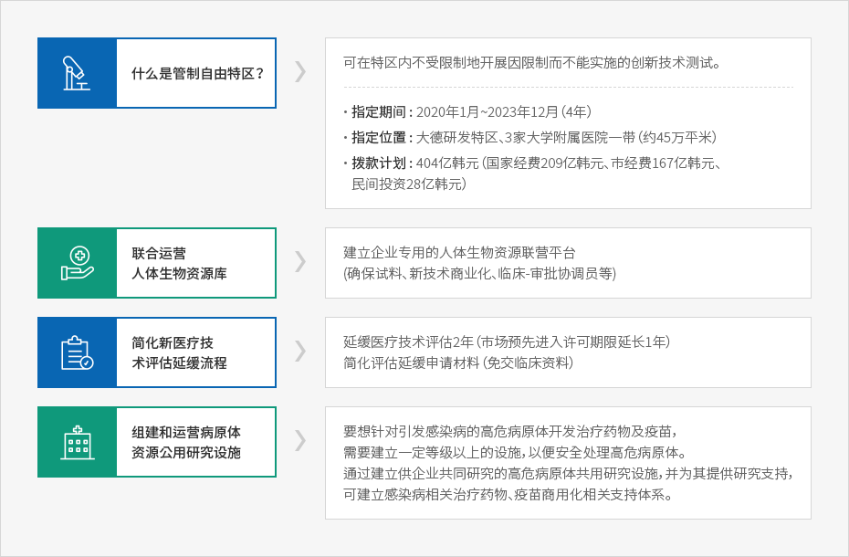
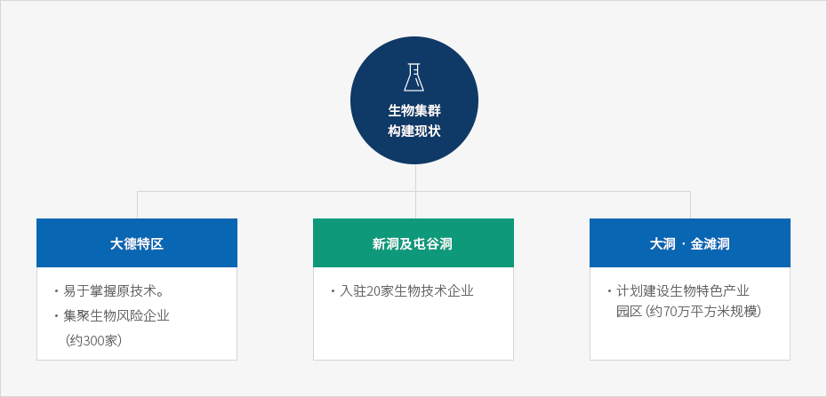

医疗生物产业
- Home
- 主要产业
- 医疗生物产业
生物产业的优选地——大田
选入生物医疗领域管制自由特区


- 什么是管制自由特区？ - 可在特区内不受限制地开展因限制而不能实施的创新技术测试。
- 指定期间 : 2020年1月~2023年12月（4年）
- 指定位置 : 大德研发特区、3家大学附属医院一带（约45万平米）
- 拨款计划 : 404亿韩元（国家经费209亿韩元、市经费167亿韩元、民间投资28亿韩元）
- 联合运营人体生物资源库 - 建立企业专用的人体生物资源联营平台 (确保试料、新技术商业化、临床-审批协调员等)
- 简化新医疗技术评估延缓流程 - 延缓医疗技术评估2年（市场预先进入许可期限延长1年）, 简化评估延缓申请材料（免交临床资料）
- 병원체자원 공용연구시설 구축운영 - 감염병을 유발하는 고위험 병원체의 치료제·백신 개발을 위해서는 고위험 병원체를 취급할 수 있는 일정 등급이상의 시설이 필요하여, 기업들이 공동연구할 수 있는 고위험 병원체 공용연구시설구축 및 연구지원을 통해 감염병관련 치료제, 백신 등의 조기상용화 지원체계 마련

建设生物集群

生物集群构建现状
- 大德特区
- 易于掌握原技术。
- 集聚生物风险企业（约300家）
- 新洞及屯谷洞
- 入驻20家生物技术企业
- 大洞 · 金滩洞
- 计划建设生物特色产业园区（约70万平方米规模）